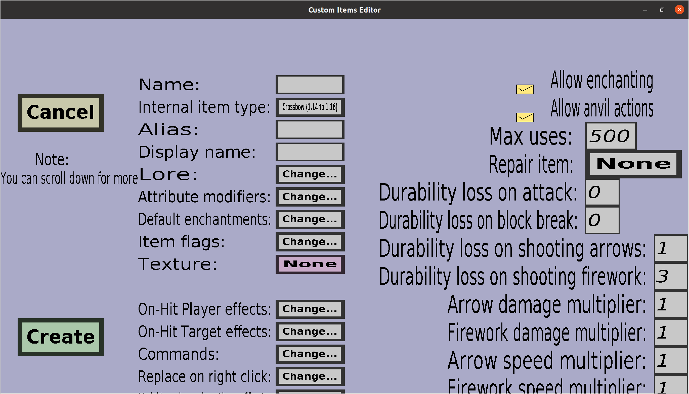

The crossbow edit menu can be used to edit or create custom crossbows. If you just started creating a new custom crossbow, it should look like this:
This menu has almost everything the tool edit menu has, but more. Contrary to the tool edit menu, this menu does not allow a custom model. That feature was left out because crossbows have completely different models and didn't seem very relevant (I think almost nobody would use it). Also, custom crossbows need Crossbow textures instead of normal textures. Make sure you have loaded the crossbow texture into the editor before you start filling in the other properties of the custom crossbow. For more information about crossbow textures, see the crossbow texture edit menu. You can reach it from the texture overview.
This is the amount of durability that the crossbow will lose after shooting an arrow. This will be ignored if the crossbow is unbreakable.
This is the amount of durability that the crossbow will lose after shooting a firework rocket (players can do this when holding a crossbow in their main hand and a firework rocket in their offhand). This will be ignored if the crossbow is unbreakable.
When someone is hit by an arrow fired from this custom crossbow, the damage will be multiplied by this number. For instance, setting this number to 2 will cause the custom crossbow to deal twice the damage of a regular crossbow when shooting arrows.
When someone is hit by a firework rocket fired from this custom crossbow, the damage will be multiplied by this number. For instance, setting this number to 2 will cause the custom crossbow to deal twice the damage of a regular crossbow when shooting firework rockets.
When an arrow is shot from this custom crossbow, its speed will be multiplied by this number. For instance, setting this number to 2 will cause arrows fired by this custom crossbow to fly twice as fast as arrows fired from a regular crossbow. Note that faster arrows deal more damage than slower arrows, so increasing this number will also increase the damage.
When a firework rocket is shot from this custom crossbow, its speed will be multiplied by this number. For instance, setting this number to 2 will cause firework rockets fired by this custom crossbow to fly twice as fast as firework rockets fired from regular crossbows. Unlike arrows, firework rockets won't deal more damage when they have more speed.
When someone gets hit by an arrow fired from this custom crossbow, this amount will affect the knockback given to the victim. If this amount is 1, the victim will get the same knockback as if he were struck by a regular crossbow with the enchantment Punch 1. If the custom crossbow is enchanted with Punch, the effective punch will be the sum of the Punch enchantment level and this amount. For instance, if the custom crossbow is enchanted with Punch 1 and has an arrow knockback strength of 2, the victim will get the same knockback as if he were struck by a regular crossbow with Punch level 3.
Whether arrows fired from this custom crossbow will be affected by gravity. If this checkbox is checked, the arrows will be affected by gravity and thus fall down. If this checkbox is not checked, the arrows will ignore gravity and fly in a straight line.